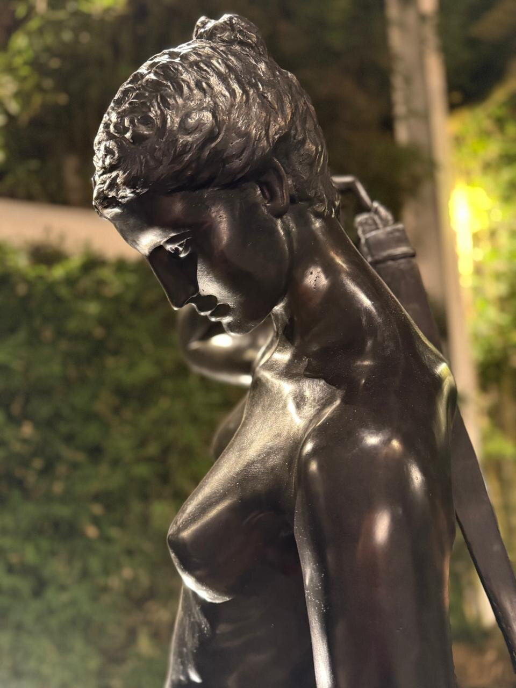
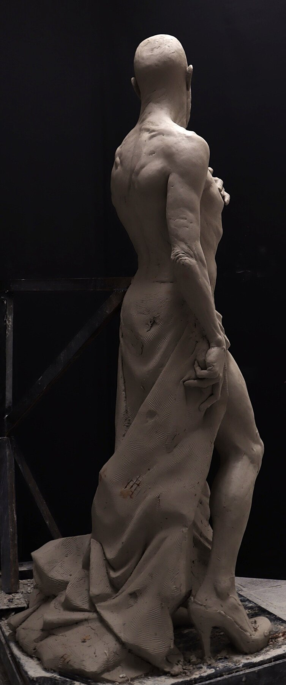

Selected Work
The Figure
Use the outer arrows to move between pieces. Where a piece has more than one photo, use the inner arrows or dots to see it from different angles.

Use the outer arrows to move between pieces. Where a piece has more than one photo, use the inner arrows or dots to see it from different angles.
Unfinished work, raw clay, hands mid-motion — the studio before the patina.

Sofia Schambach is a Guatemalan visual artist specializing in figurative sculpture, with a parallel practice in academic painting and drawing. She trained for three years at the Barcelona Academy of Art (2019–2022), studying figure modeling, anatomy, and academic drawing under instructors including the sculptor Eudald de Juana.
Nothing is symmetrical. The fat settles differently on every body, the bone pushes through in unexpected places, the flesh sags or swells in ways no diagram predicts. Schambach is drawn to the figure precisely because it is the most complex object she knows — an architecture of contradictions never fully solved.
She works primarily in clay, casting finished pieces in plaster, bronze, or resin. Her scale ranges from intimate studies to monumental commissions, including Diana la Cazadora, a 175 cm patinated bronze created for a private client in Guatemala.